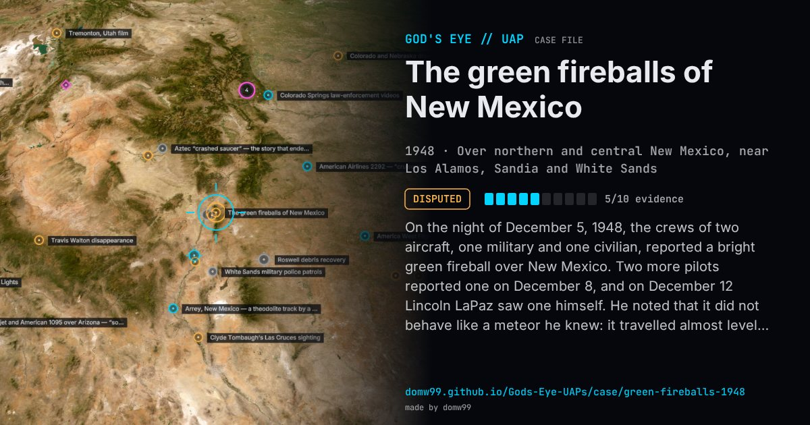

The green fireballs of New Mexico

On the night of December 5, 1948, the crews of two aircraft, one military and one civilian, reported a bright green fireball over New Mexico. Two more pilots reported one on December 8, and on December 12 Lincoln LaPaz saw one himself. He noted that it did not behave like a meteor he knew: it travelled almost level, its path drooped at the end and it broke into fragments that stayed bright green. With the reports clustering around Los Alamos, Sandia and the White Sands range, the Air Force and the Atomic Energy Commission took them seriously. In February 1949 a conference at Los Alamos, with Edward Teller and the geophysicist Joseph Kaplan among those present, could not settle what they were. In December 1949 the Air Force set up Project Twinkle, a network of observation posts and cameras, but it was never fully staffed and was wound up about two years later with no answer beyond “probably natural”.
Explanation
Most scientists then and since take them for bright meteors (bolides), whose green colour comes from metals such as magnesium and nickel burning in the air. Lincoln LaPaz, the University of New Mexico meteor expert who led the first inquiry, argued they were not ordinary meteors: no fragments were ever found, the paths were unusually flat and they seemed to cluster around the nuclear sites. Project Twinkle, the Air Force’s camera watch, ran out without a single useful photograph and concluded they were probably natural.
What was seen
Shape: Bright green balls of light, as bright as or brighter than the full Moon, crossing the sky in a flat path and often breaking up
Witnesses: Airline and military aircrews, security staff at Los Alamos and Sandia, the astronomer Lincoln LaPaz, and later the astrophysicist Donald Menzel
Duration: Each a few seconds; the reports ran from late 1948 into the early 1950s
Sources
Browse
- United States
- 1940s
- Disputed
- Mass sightings
- Official government documents
- Many independent witnesses
- Military witnesses
- Pilot and aircrew witnesses
- Lights and fireballs
- Spheres and orbs